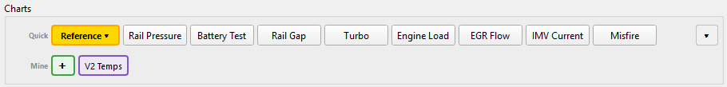

Quick Charts provide instant access to the most commonly needed diagnostic views. These pre-configured charts are designed based on real-world diagnostic experience and focus on the parameters that matter most when troubleshooting engine issues. Alongside the built-in charts sits My Charts – your own saved chart templates – and both rows quietly reorder themselves over time to put the charts you actually use front and center.

Quick Charts eliminate the need to manually select PIDs and configure axes for common diagnostic scenarios. Instead of searching through hundreds of parameters, you can instantly view the most relevant data for specific diagnostic tasks.
The Charts panel sits at the top of the main window and is organized into two labelled rows:
| Row | Contents |
|---|---|
| Quick | The built-in diagnostic charts described below. When a snapshot type has reference charts available, a gold Reference ▾ button is pinned at the left of this row. |
| Mine | Your own saved My Charts (see below), led by a green ＋ tile for saving the chart currently on the canvas. |
Both rows stay a fixed height no matter how many charts they hold. If there are more charts than fit the width of the window, the extras fold into a trailing ▾ (“More charts”) menu at the end of the row instead of wrapping or scrolling – click it to see everything that didn't fit.
The Quick Charts available depend on the snapshot type that is loaded. Snapshot Decoder automatically detects your snapshot format and displays only the relevant charts for that engine type.
To open a Quick Chart:
Snapshot Decoder quietly keeps a click count for every chart – built-in Quick Charts and your own My Charts alike – and uses it to order each row. The chart you open most often sits leftmost; charts you rarely touch drift toward the end of the row and eventually into the ▾ overflow menu. If two charts have the same click count, they fall back to their normal declared order, so a brand-new install (with no usage history yet) shows every chart in exactly the order it always has.
This personalization builds up automatically the more you use Snapshot Decoder; there's nothing to configure. Your most-used diagnostic views simply become the fastest ones to reach.
My Charts is the Mine row of the Charts panel, right below the built-in Quick Charts. It lets you turn any combination of PIDs and axis settings you've built on the chart canvas into a chart you can reopen with one click, without touching the PID Descriptions panel again.
Chart names must be unique – if a name is already used by a built-in chart or another My Chart, you'll be asked to pick a different one. If you reopen an existing My Chart, change its PIDs or axes, and click ＋ again, Snapshot Decoder asks whether to update the existing chart with your changes or save it as a new one.
Right-click any chart button in the Mine row to Edit (load it back onto the canvas so you can adjust it), Duplicate (create a copy to tweak without touching the original), or Delete it. Deleting asks for confirmation first, since it can't be undone.
Every My Chart remembers which engine/snapshot type was loaded when you saved it – for example a V1 Engine (ECU) snapshot versus a V2 Engine (ECU) snapshot, or an Engine Use Data snapshot. A My Chart only appears in the Mine row when that same type of snapshot is loaded again. This keeps the row relevant and uncluttered: a chart built around PIDs from one system won't show up – and won't confuse you with missing data – when you're looking at a different engine or system type.